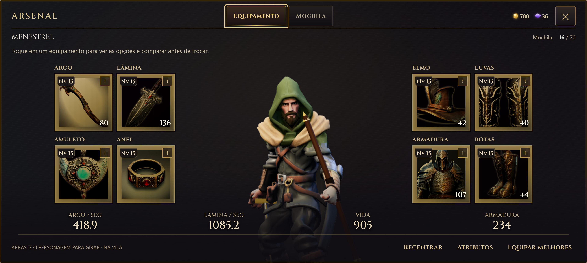
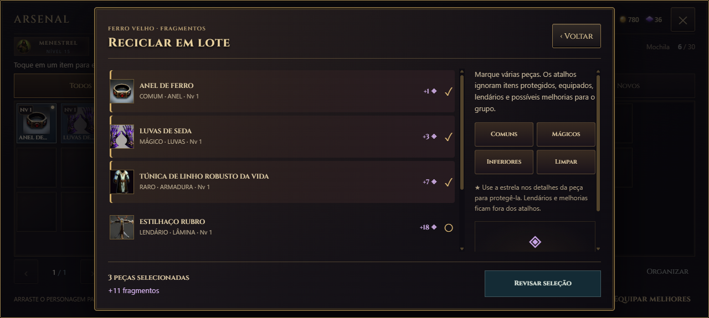
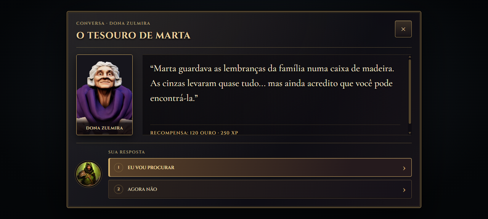

Esta versão corrige a causa do deslocamento do personagem na prévia, acrescenta reciclagem em lote e estende o acabamento da ficha do herói aos menus e conversas.
Personagem no lugar
O terreno do mundo também estava deslocando a imagem do personagem no arsenal. A prévia agora renderiza sem esse efeito, mantendo a pose de descanso e a restauração da vista ao abrir ou mudar a orientação. A verificação passou a conferir os pixels renderizados com o terreno ativo.

Prévia isolada do terreno, com equipamentos acessíveis ao redor.
Reciclar várias peças de uma vez
Na mochila, escolha Reciclar em lote, marque as peças e revise o total de fragmentos antes de confirmar. Os atalhos Comuns, Mágicos e Inferiores preservam equipamentos em uso, protegidos, lendários e possíveis melhorias para o grupo. Use a estrela nos detalhes para proteger um item; a proteção fica salva na partida.

A seleção não destrói itens. A reciclagem só acontece depois da revisão e confirmação.
A mesma identidade em cada interação
Fontes, molduras, superfícies, contraste e estados dos botões seguem uma linguagem compartilhada. Conversas receberam retratos e respostas numeradas. Ficha, habilidades, diário, equipamento, mochila, escolhas, título e pausa têm acabamento consistente; as opções foram agrupadas por assunto.

Leitura e escolhas com espaço próprio, dentro da temática do jogo.
Capturas da bancada de testes com os modelos reais. Interface verificada em seis tamanhos de tela; inventário também revisado em nove resoluções, com zoom e troca de orientação. Teste físico no aparelho pendente.